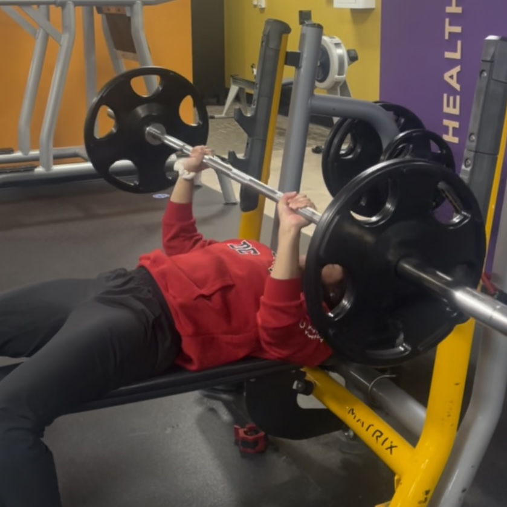
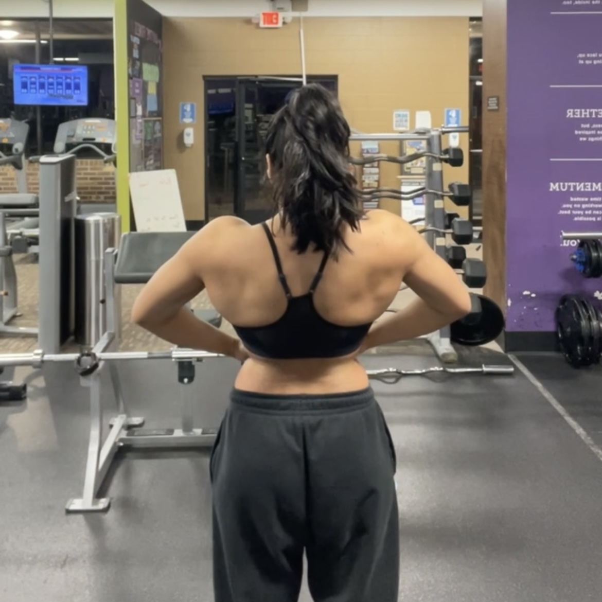
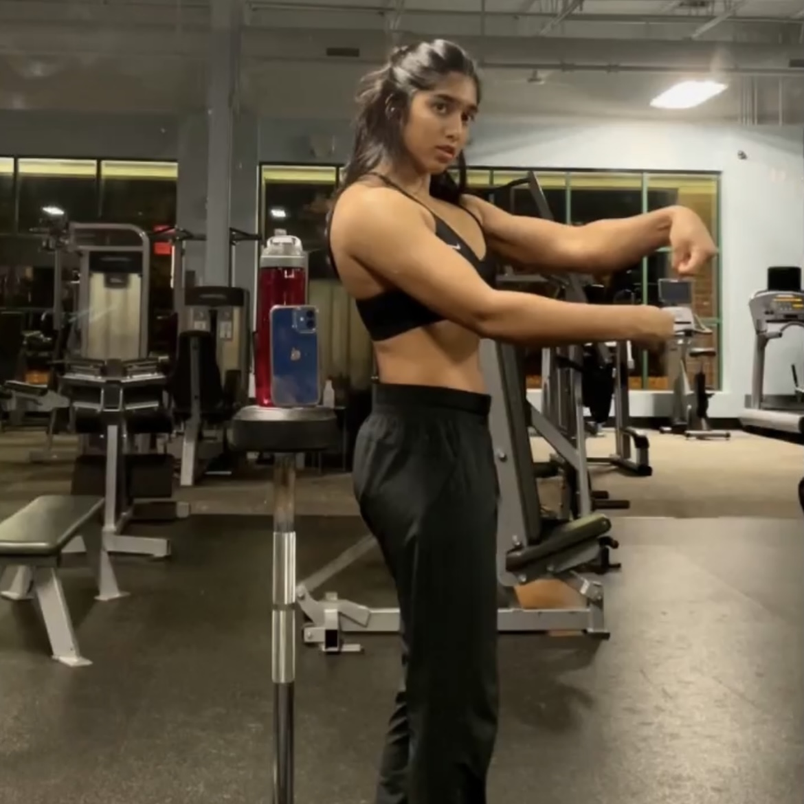
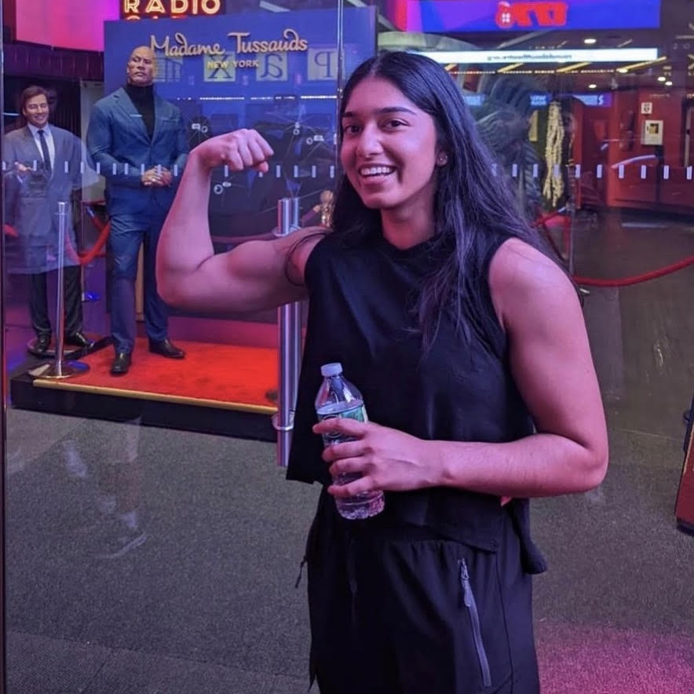
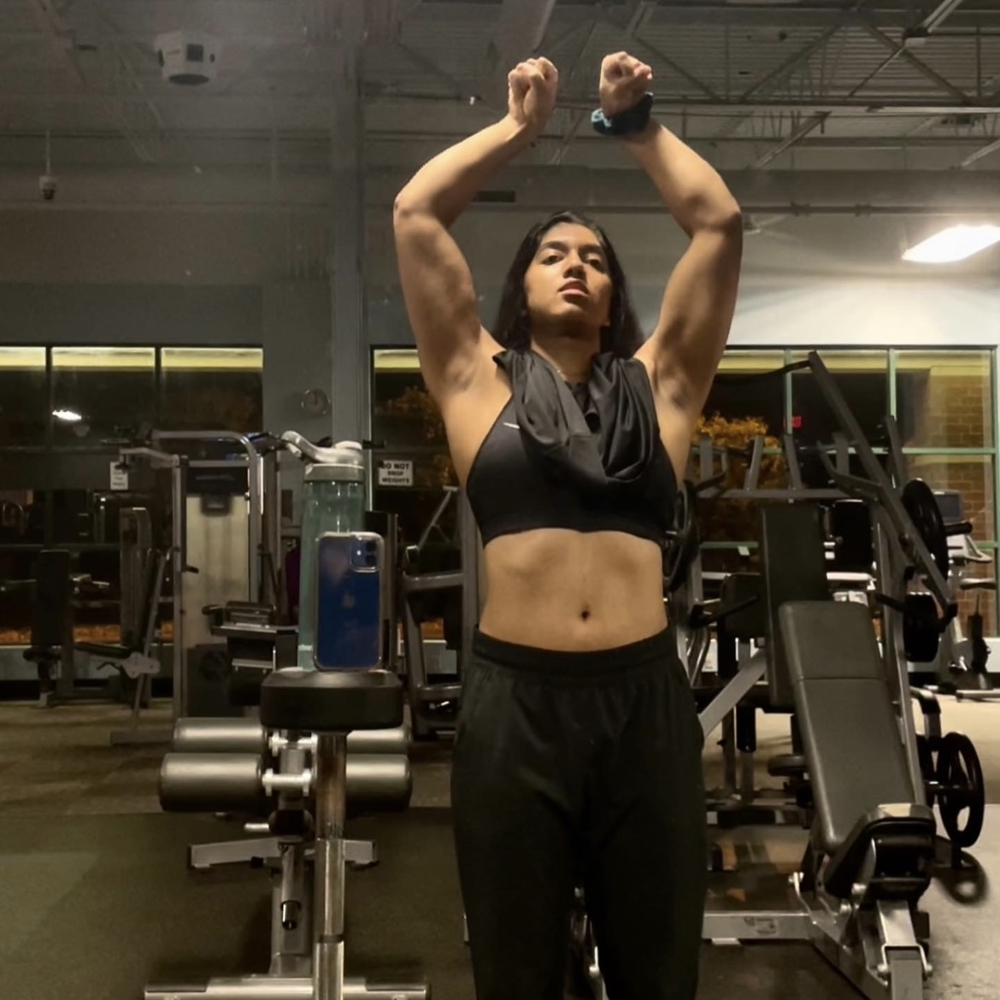
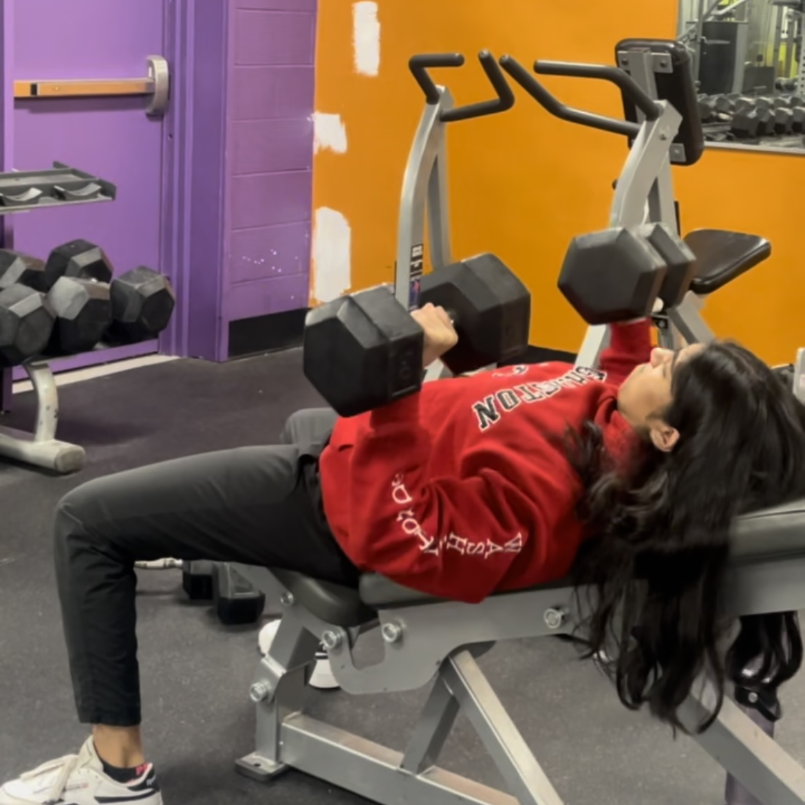

MY STORY
A LOOK INTO MY LIFE
I played sports my whole life, from travel soccer, to swimming, to track, to tennis. I was always very athletic and even the #1 singles player on my high school varsity tennis team. Sports were my outlet for stress all my life, which is why I loved being active so much.
In 2020, Covid hit right before my tennis season. Not being able to play my final year of high school was upsetting. On top of that, as someone who has been active almost every day of her life, sitting idly at home was very upsetting. For the first few months of quarantine, I was honestly quite depressed. I did not eat well and was not doing any form of exercise, resulting in me becoming very underweight.
I pushed through the negativity and decided to make change one day. I started self-educating on weight training and nutrition. I worked with the 8-pound dumbbells lying around and bodyweight exercises for 3 months at home, while properly fueling my body with a high-protein diet. The muscle mass I gained was so motivating, and my mindset became so much more optimistic.
Soon, I got a membership at the gym near my house, and the rest is history. I have been consistently training and dieting for almost 2 years now. While I have put on several pounds of muscle and am no longer underweight, I feel my mental growth from the gym lifestyle is far more impressive.
The gym has changed my life. I never thought picking up some dumbbells would lead to the life I have now. It’s incredible how I made friends in the gym and online from a shared passion for fitness and how I learned the value of showing up for myself. The gym not only enables physical transformation, but also mental transformation. I want to help others see this. Training should not be dreaded; it should be looked forward to. It is the highlight of my day and I want to coach you to see it the same way!
PHOTO GALLERY





